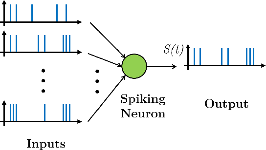

Rilevamento Attività delle Onde Radio
Sviluppato un modello di machine learning per rilevare attività delle onde radio da dati grezzi, concentrandosi sull'elaborazione dei segnali e sui sistemi di comunicazione. Utilizzato Python, scikit-learn e visualizzazione personalizzata dei dati per identificare schemi nei segnali radio.

Reti Neurali a Spike
Progettate e implementate architetture di reti neurali a spike per il riconoscimento di pattern temporali, sfruttando l'apprendimento reward-modulated STDP. Esplorate tecniche avanzate di addestramento utilizzando snnTorch e SpykeTorch, con esperimenti su Liquid State Machines e strati convoluzionali ricorrenti.
Strategia di Trading Volatility Carry
Creata una strategia di trading quantitativo basata sul volatility carry. Eseguito backtesting e ottimizzazione dei modelli di trading utilizzando librerie Python come pandas, NumPy e matplotlib per analizzare i dati di mercato e valutare le metriche di performance.
Riconoscimento Vocale (AudioKWS)
Sviluppato un sistema per il riconoscimento in tempo reale di comandi vocali. Integrate tecniche di elaborazione del segnale e modelli di machine learning utilizzando strumenti come Librosa e PyTorch per rilevare parole chiave specifiche nei flussi audio con alta precisione.
Matematica Finanziaria
Creato un repository di modelli matematici e algoritmi per la finanza, inclusi la valutazione di derivati, l'ottimizzazione del portafoglio e l'analisi del rischio. Focalizzato sulla chiarezza e precisione, con implementazioni in Python.

Dashboard Live per Raggi Cosmici
Costruita una pipeline di dati in tempo reale e una dashboard per monitorare l'attività dei raggi cosmici utilizzando Apache Spark e Kafka. Elaborati flussi di dati ad alta frequenza e visualizzati i risultati in modo dinamico, dimostrando competenze nei sistemi distribuiti e nell'analisi in tempo reale.